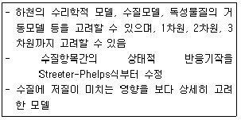
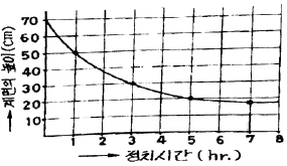
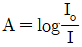
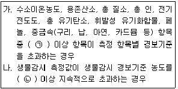
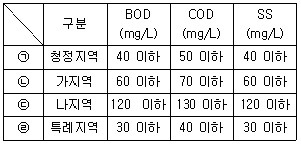
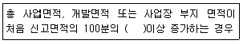

수질환경산업기사 (2019-08-04 기출문제)
1과목: 수질오염개론
1. 현재 수온이 15℃이고 평균수온이 5℃일 때 수심 2.5m인 물의 1m2에 걸친 연전달속도(kcal/hr)는? (단, 정상상태이며, 5℃에서의 Kr=5.8kcal/hrㆍm2℃/m)
- 1.32
- 2.32
- 10.2
- 23.2
(정답률: 43%)

2. 생물학적 처리공정의 미생물에 관한 설명으로 틀린 것은?
- 활성슬러지 공정 내의 미생물은 Pseudomonas, Zoogloea, Archromobacter 등이 있다.
- 사상성 미생물인 Protozoa가 나타나면 응집이 안 되고 슬러지 벌킹현상이 일어난다.
- 질산화를 일으키는 박테리아는 Nitrosomonas와 Nitrobacter 등이 있다.
- 포기조에서 호기성 및 임의성 박테리아는 새로운 세포로 변화시키는 합성과정의 에너지를 얻기 위하여 유기물의 일부를 이용한다.
(정답률: 62%)
3. 유기성 폐수에 관한 설명 중 옳지 않은 것은?
- 유기성 폐수의 생물학적 산화는 수서 세균에 의하여 생산되는 산소로 진행되므로 화학적 산화와 동일하다고 할 수 있다.
- 생물학적 처리의 영향 조건에는 C/N비, 온도, 공기 공급정도 등이 있다.
- 유기성 폐수는 C, H, O를 주성분으로 하고 소량의 N, P, S 등을 포함하고 있다.
- 미생물이 물질대사를 일으켜 세포를 합성하게 되는 데 실제로 생성된 세포량은 합성된 세포량에서 내 호흡에 의한 감량을 뺀 것과 같다.
(정답률: 61%)
4. 초기 농도가 100mg/L인 오염물질의 반감기가 10day라고 할 때, 반응속도가 1차 반응을 따를 경우 5일 후 오염물질의 농도(mg/L)는?
- 70.7
- 75.7
- 80.7
- 85.7
(정답률: 54%)
5. 해수에 관한 설명으로 옳지 않은 것은?
- 해수의 Mg/Ca 비는 담수에 비하여 크다.
- 해수의 밀도는 수온, 수압, 수심 등과 관계없이 일정하다.
- 염분은 적도 해역에서 높고 남북 양극해역에서 낮다.
- 해수 내 전체 질소 중 35% 정도는 암모니아성 질소, 유기질소 형태이다.
(정답률: 75%)
6. 하천의 수질모델링 중 다음 설명에 해당하는 모델은?

- QUAL-I model
- WORRS model
- QUAL-Ⅱ model
- WASP5 model
(정답률: 69%)
7. 산성비를 정의할 때 기준이 되는 수소이온농도(pH)는?
- 4.3 이하
- 4.5 이하
- 5.6 이하
- 6.3 이하
(정답률: 82%)
8. 여름 정체기간 중 호수의 깊이에 따른 CO2와 DO 농도의 변화를 설명한 것으로 옳은 것은?
- 표수층에서 CO2 농도가 DO 농도보다 높다.
- 심해에서 DO 농도는 매우 낮지만 CO2 농도는 표수층과 큰 차이가 없다.
- 깊이가 깊어질수록 CO2 농도보다 DO 농도가 높다.
- CO2 농도와 DO 농도가 같은 지점(깊이)이 존재한다.
(정답률: 74%)
9. 하천에서 유기물 분해상태를 측정하기 위해 20℃에서 BOD를 측정했을 때 K1=0.2/day 이었다. 실제 하천온도가 18℃일 때 탈산소계수(day)는? (단, 온도보정계수=1.035)
- 약 0.159
- 약 0.164
- 약 0.172
- 약 0.187
(정답률: 46%)
10. 부영양호(eutrophic lake)의 특성에 해당하는 것은?
- 생산과 소비의 균형
- 낮은 영양 염류
- 조류의 과다발생
- 생물종 다양성 증가
(정답률: 82%)
11. 시험대상 미생물을 50% 치사시킬 수 있는 유출수 또는 시료에 녹아있는 독성물질의 농도를 나타내는 것은?
- TLN50
- LD50
- LC50
- LI50
(정답률: 79%)
12. 미생물의 신진대사 과정 중 에너지 발생량이 가장 많은 전자(수소)수용체는?
- 산소
- 질산이온
- 황산이온
- 환원된 유기물
(정답률: 66%)
13. 물 100g에 30g의 NaCI을 가하여 용해시키면 몇 %(W/W)의 NaCI 용액이 제조되는가?
- 15
- 23
- 31
- 42
(정답률: 62%)
14. 폐수의 분석결과 COD가 400mg/L이었고 BOD5가 250mg/L이었다면 NBDCOD(mg/L)는? (단, 탈산소계수 K1(밑이 10)=0.2/day)
- 68
- 122
- 189
- 222
(정답률: 69%)
15. HCHO(Formaldehyde) 200mg/L 의 이론적 COD값(mg/L)은?
- 163
- 187
- 213
- 227
(정답률: 67%)
16. 반응조에 주입된 물감의 10%, 90%가 유출되기까지의 시간을 각각 t10, t90이라할 때 Morrill지수는 t90/t10으로 나타낸다. 이상적인 Plug flow인 경우의 Morrill지수의 값은?
- 1보다 작다.
- 1보다 크다.
- 1이다.
- 0이다.
(정답률: 72%)
17. 탈산소 계수(상용대수 기준)가 0.12/day인 폐수의 BOD5는 200mg/L이다. 이 폐수가 3일 후에 미분해되고 남아 있는 BOD(mg/L)는?
- 67
- 87
- 117
- 127
(정답률: 56%)
18. 지표수에 관한 설명으로 옳은 것은?
- 지표수는 지하수보다 경도가 높다.
- 지표수는 지하수에 비해 부유성 유기물질이 적다.
- 지표수는 지하수에 비해 각종 미생물과 세균 번식이 활발하다.
- 지표수는 지하수에 비해 용해된 광물질이 많이 함유되어 있다.
(정답률: 65%)
19. 촉매에 관한 내용으로 옳지 않은 것은?
- 반응속도를 느리게 하는 효과가 있는 것을 역촉매라고 한다.
- 반응의 역할에 따라 반응 후 본래 상태로 회복여부가 결정된다.
- 반응의 최종 평형상태에는 아무런 영향을 미치지 않는다.
- 화학반응의 속도를 변화시키는 능력을 가지고 있다.
(정답률: 61%)
20. 수은주높이 300mm는 수주로 몇 mm인가? (단, 표준 상태 기준)
- 1960
- 3220
- 3760
- 4078
(정답률: 69%)
2과목: 수질오염방지기술
21. 농축조 설치를 위한 회분침강농축시험의 결과가 아래와 같을 때 슬러지의 초기농도가 20g/L면 5시간 정치 후의 슬러지의 평균농도(g/L)는? (단, 슬러지농도:계면 아래의 슬러지의 농도를 말함)

- 50
- 60
- 70
- 80
(정답률: 51%)
22. 액체염소의 주입으로 생성된 유리염소, 결합잔류염소의 살균력의 바르게 나열된 것은?
- HOCI＞Chloramines＞OCI-
- HOCI＞OCI-＞Chloramines
- OCI-＞HOCI＞Chloramines
- OCI-＞Chloramines＞HOCI
(정답률: 80%)
23. 철과 망간 제거방법에 사용되는 산화제는?
- 과망간산염
- 수산화나트륨
- 산화칼슘
- 석회
(정답률: 69%)
24. 활성슬러지 공정 운영에 대한 설명으로 옳지 않은 것은?
- 포기조 내의 미생물 체류시간을 증가시키기 위해 잉여슬러지 배출량을 감소시켰다.
- F/M비를 낮추기 위해 잉여슬러지 배출량을 줄이고 반송유량을 증가시켰다.
- 2차 침전지에서 슬러지가 상승하는 현상이 나타나 잉여슬러지 배출량을 증가시켰다.
- 핀 플록(pin floc) 현상이 발생하여 잉여슬러지 배출량을 감소시켰다.
(정답률: 51%)
25. 슬러지 개량방법 중 세정(Elutriation)에 관한 설명으로 옳지 않은 것은?
- 알카리도를 줄이고 슬러지탈수에 사용되는 응집제량을 줄일 수 있다.
- 비료성분의 순도를 높아져 가치를 상승시킬 수 있다.
- 소화슬러지를 물과 혼합시킨 다음 재침전시킨다.
- 슬러지의 탈수 특성을 좋게 하기 위한 직접적인 방법은 아니다.
(정답률: 56%)
26. 오존 살균에 관한 내용으로 옳지 않은 것은?
- 오존은 비교적 불안정하며 공기나 산소로부터 발생시킨다.
- 오존은 강력한 환원제로 염소와 비슷한 살균력을 갖는다.
- 오존처리는 용존 고형물을 생성하지 않는다.
- 오존처리는 암모늄이온이나 pH의 영향을 받지 않는다.
(정답률: 68%)
27. 폐수량 500m3/day, BOD 1000mg/L인 폐수를 살수여상으로 처리하는 경우 여재에 대한 BOD부하를 0.2kg/m3ㆍday로 할 때 여상의 용적(m3)은?
- 250
- 500
- 1500
- 2500
(정답률: 58%)
28. 슬러지의 함수율이 95%에서 90%로 줄어들면 슬러지의 부피는? (단, 슬러지 비중=1.0)
- 2/3로 감소한다.
- 1/2로 감소한다.
- 1/3로 감소한다.
- 3/4로 감소한다.
(정답률: 70%)
29. 미생물의 고정화를 위한 팰렛(Pellet)재료로서 이상적인 요구조건에 해당되지 않는 것은?
- 처리, 처분이 용이할 것
- 압축강도가 높을 것
- 암모니아 분배계수가 낮을 것
- 고정화 시 활성수율과 배양후의 활성이 높을 것
(정답률: 71%)
30. 폐수특성에 따른 적합한 처리법으로 옳지 않은 것은?
- 비소 함유폐수-수산화 제2철 공침법
- 시안 함유폐수-오존 산화법
- 6가 크롬 함유폐수-알칼리 염소법
- 카드뮴 함유폐수-황화물 침전법
(정답률: 62%)
31. 정수시설 중 취수시설인 침사지 구조에 대한 내용으로 옳은 것은?
- 표면 부하율은 2~5m/min을 표준으로 한다.
- 지내 평균유속은 30cm/s 이하를 표준으로 한다.
- 지의 상단높이는 고수위보다 0.6~1m의 여유고를 둔다.
- 지의 유효수심은 2~3m를 표준으로 하고 퇴사심도는 1m이하로 한다.
(정답률: 55%)
32. 폐수처리법 중에서 고액분리법이 아닌 것은?
- 부상분리법
- 원심분리법
- 여과법
- 이온교환막, 전기투석법
(정답률: 60%)
33. 길이 23m, 폭 8m, 깊이 2.3m인 직사각형 침전지가 3000m3/day의 하수를 처리할 경우, 표면부하율(m/day)은?
- 10.5
- 16.3
- 20.6
- 33.4
(정답률: 62%)
34. 최종침전지에서 발생하는 침전성이 양호한 슬러지의 부상(sludge rising) 원인을 가장 알맞게 설명한 것은?
- 침전조의 슬러지 압밀 작용에 의한다.
- 침전조의 탈질화 작용에 의한다.
- 침전조의 질산화 작용에 의한다.
- 사상균류의 출현에 의한다.
(정답률: 62%)
35. SS가 8000mg/L인 분뇨를 전처리에서 15%, 1차 처리에서 80%의 SS를 제거하였을 때 1차 처리 후 유출되는 분뇨의 SS 농도(mg/L)는?
- 1360
- 2550
- 2750
- 2950
(정답률: 58%)
36. 염소의 살균력에 관한 설명으로 옳지 않은 것은?
- 살균강도는 HOCI가 OCI-의 80배 이상 강하다.
- 염소의 살균력은 온도가 높고, pH가 낮을 때 강하다.
- chloramines은 소독 후 물에 이 취미를 발생시키지는 않으나 살균력이 약하여 살균작용이 오래 지속되지 않는다.
- 염소는 대장균 소화기 계통의 감염성 병원균에 특히 살균효과가 크나 바이러스는 염소에 대한 저항성이 커 일부 생존할 염려가 크다.
(정답률: 60%)
37. 산업폐수 중에 존재하는 용존무기탄소 및 용존암모니아(NH4+)의 기체를 제거하기 위한 가장 적절한 처리방법은?
- 용존무기탄소:pH 10 + Air stripping,
용존암모니아:pH 10 + Air stripping - 용존무기탄소:pH 9 + Air stripping,
용존암모니아:pH 4 + Air stripping - 용존무기탄소:pH 4 + Air stripping,
용존암모니아:pH 10 + Air stripping - 용존무기탄소:pH 4 + Air stripping,
용존암모니아:pH 4 + Air stripping
(정답률: 67%)
38. 탈질공정의 외부탄소원으로 쓰이지 않는 것은?
- 메탄올
- 소화조 상징액
- 초산
- 생석회
(정답률: 55%)
39. 흡착과 관련된 등온흡착식으로 볼 수 없는 것은?
- Langmuir 식
- Freundlich 식
- AET 식
- BET 식
(정답률: 62%)
40. 완전혼합 활성슬러지 공정으로 용해성 BOD5가 250mg/L인 유기성폐수가 처리되고 있다. 유량이 15000m3/day이고 반응조 부피가 5000m3일 때 용적부하율(kg BOD5/m3ㆍday)은?
- 0.45
- 0.55
- 0.65
- 0.75
(정답률: 58%)
3과목: 수질오염공정시험방법
41. 용액 중 CN-농도를 2.6mg/L로 만들려고 하면 물 1000L에 용해될 NaCN의 양(g)은? (단, 원자량 Na 23)
- 약 5
- 약 10
- 약 15
- 약 20
(정답률: 45%)
42. 자외선/가시선 분광법에 의한 수질용 분석기의 파장 범위(nm)로 가장 알맞은 것은?
- 0~200
- 50~300
- 100~500
- 200~900
(정답률: 64%)
43. 흡광광도법에 대한 설명으로 옳지 않은 것은?
- 흡광광도법은 빛이 시료용액 중을 통과할 때 흡수나 산란 등에 의하여 강도가 변화하는 것을 이용하는 분석방법이다.
- 흡광광도 분석장치를 이용할 때는 최고의 투과도를 얻을 수 있는 흡수파장을 선택해야 한다.
- 흡광광도 분석장치는 광원부, 파장선택부, 시료부 및 측광부로 구성되어 있다.
- 흡광광도법의 기본이 되는 램버어트-비어의 법칙은

로 표시할 수 있다.
(정답률: 56%)
44. 다이페닐카바자이드를 작용시켜 생성되는 적자색의 착화합물의 흡광도를 540nm에서 측정하여 정량하는 항목은?
- 카드뮴
- 6가 크롬
- 비소
- 니켈
(정답률: 59%)
45. 망간의 자외선/가시선분광법에 관한 설명으로 옳은 것은?
- 과요오드산 칼륨법은 Mn2+을 KIO3으로 산화하여 생성된 MnO4-을 파장 552nm에서 흡광도를 측정한다.
- 염소나 할로겐 원소는 MnO4-의 생성을 방해하므로 염산(1+1)을 가해 방해를 제거한다.
- 정량한계는 0.2 mg/L, 정밀도의 상대표준편차는 25% 이내이다.
- 발색 후 고온에서 장시간 방치하면 퇴색되므로 가열(정확히 1시간)에 주의한다.
(정답률: 53%)
46. 총칙 중 온도표시에 관한 내용으로 옳지 않은 것은?
- 냉수는 15℃ 이하를 말한다.
- 찬 곳은 따로 규정이 없는 한 4~15℃의 곳을 뜻한다.
- 시험은 따로 규정이 없는 한 상온에서 조작하고 조작 직후에 그 결과를 관찰한다.
- 온수는 60~70℃를 말한다.
(정답률: 68%)
47. 자외선/가시선 분광법-이염화주석환원법으로 인산염인을 분석할 때 흡광도 측정 파장(nm)은?
- 550
- 590
- 650
- 690
(정답률: 50%)
48. 유량 측정 시 적용되는 웨어의 웨어판에 관한 기준으로 알맞은 것은?
- 웨어판 안측의 가장자리는 곡선이어야 한다.
- 웨어판은 수로의 장축에 지갂 또는 수직으로 하여 말단의 바깥틀에 누수가 없도록 고정한다.
- 직각 3각 웨어판의 유량측정공식은 Q=Kㆍbㆍh3/2이다.
- 웨어판의 재료는 10mm 이상의 두께를 갖는 내구성이 강한 철판으로 하여야 한다.
(정답률: 61%)
49. 용존산소를 전극법으로 측정할 때에 관한 내용으로 틀린 것은?
- 정량한계는 0.1mg/L이다.
- 격막 필름은 가스를 선택적으로 통과시키지 못하므로 장시간 사용 시 황화수소 가스의 유입으로 감도가 낮아질 수 있다.
- 정확도는 수중의 용존산소를 윙클러 아자이드화나트륨 변법으로 측정한 결과와 비교하여 산출한다.
- 정확도는 4회 이상 측정하여 측정 평균값이 상대백분율로서 나타내며 그 값이 95~1⑤% 이내이어야 한다.
(정답률: 48%)
50. BOD 실험을 할 때 사전경험이 없는 경우 용존산소가 적당히 감소되도록 시료를 희석한 조합 중 틀린 것은?
- 오염된 하천수:25~100%
- 처리하지 않은 공장폐수와 침전된 하수:5~15%
- 처리하여 방류된 공장폐수:5~25%
- 오염정도가 심환 공업폐수:0.1~1.0%
(정답률: 56%)
51. 피토유관의 압력 수두 차이는 5.1cm이다. 지시계 유체인 수은의 비중이 13.55일 때 물의 유속(m/sec)은?
- 3.68
- 4.12
- 5.72
- 6.86
(정답률: 29%)
52. 수질 시료의 전처리 방법이 아닌 것은?
- 산분해법
- 가열법
- 마이크로파 산분해법
- 용매추출법
(정답률: 54%)
53. 페놀류-자외선/가시선 분광법 측정 시 클로로폼추출법, 직접측정법의 정량한계(mg/L)를 순서대로 옳게 나열한 것은?
- 0.003, 0.03
- 0.03, 0.003
- 0.0⑤, 0.⑤
- 0.⑤, 0.0⑤
(정답률: 62%)
54. 시료 중 분석 대상 물질의 농도를 포함하도록 범위를 설정하고, 분석물질의 농도변화에 따른 지시값을 나타내는 방법이 아닌 것은?
- 내부표준법
- 검정곡선법
- 최확수법
- 표준물첨가법
(정답률: 55%)
55. pH를 20℃에서 4.00로 유지하는 표준용액은?
- 수산염 표준액
- 인산염 표준액
- 프탈산염 표준액
- 붕산염 표준액
(정답률: 46%)
56. 취급 또는 저장하는 동안에 이물질이 들어가거나 또는 내용물이 손실되지 아니하도록 보호하는 용기는?
- 차광용기
- 밀봉용기
- 밀폐용기
- 기밀용기
(정답률: 68%)
57. 노말헥산 추출물질 시험 결과가 다음과 같을 때 노말헥산 추출물질의 농도(mg/L)는? (단, 건조증발용 츨라스크의 무게=52.0124g, 추출건조 후 증발용 플라스크와 잔유물질 무게=52.0246g, 시료의 양=2L)
- 약 2
- 약 4
- 약 6
- 약 8
(정답률: 51%)
58. 다이크롬산칼륨에 의한 화학적산소요구량 측정 시 염소이온의 양이 40mg 이상 공존할 경우 첨가하는 시약과 염소이온의 비율은?
- HgSO4:CI-=5:1
- HgSO4:CI-=10:1
- AgSO4:CI-=5:1
- AgSO4:CI-=10:1
(정답률: 49%)
59. 4-아미노안티피린법에 의한 페놀의 정색반응을 방해하지 않는 물질은?
- 질소 화합물
- 황 화합물
- 오일
- 타르
(정답률: 41%)
60. 기체크로마토그래피법에 의한 폴리클로리네이티드비페닐 분석 시 이용하는 검출기로 가장 적절한 것은?
- ECD
- FID
- FPD
- TCD
(정답률: 56%)
4과목: 수질환경관계법규
61. 1일 폐수배출량 500m3인 사업장의 종별 규모는?
- 제1종 사업장
- 제2종 사업장
- 제3종 사업장
- 제4종 사업장
(정답률: 72%)
62. 폐수의 원래 상태로는 처리가 어려원 희석하여야만 오염물질의 처리가 가능하다고 인정을 받고자 할 때 첨부하여야 하는 자료가 아닌 것은?
- 처리하려는 폐수농도
- 희석처리의 불가피성
- 희석배율
- 희석방법
(정답률: 51%)
63. 수질오염감시경보 중 관심 경보 단계의 발령 기준으로 ()의 내용으로 옳은 것은?

- ㉠ 1개, ㉡ 30분
- ㉠ 1개, ㉡ 1시간
- ㉠ 2개 , ㉡ 30분
- ㉠ 2개, ㉡ 1시간
(정답률: 58%)
64. 폐수배출시설 및 수질오염방지시설의 운영일지 보존기간은? (단, 폐수무방류배출시설 제외)
- 최종 기록일로부터 6개월
- 최종 기록일로부터 1년
- 최종 기록일로부터 2년
- 최종 기록일로부터 3년
(정답률: 48%)
65. 1일 폐수 배출량이 2000m3미만인 규모의 지역별, 항목별 수질오염 배출허용기준으로 옳지 않은 것은?

- ㉠
- ㉡
- ㉢
- ㉣
(정답률: 49%)
66. 개선명령을 받은 자가 개선명령을 이행하지 아니하거나 기간 이내에 이행은 하였으나 검사결과가 배출허용기준을 계속 초과할 때의 처분인 ‘조업정지명령’을 위반한 자에 대한 벌칙기준은?
- 1년 이하의 징역 또는 1천만원 이하의 벌금
- 2년 이하의 징역 또는 3천만원 이하의 벌금
- 5년 이하의 징역 또는 5천만원 이하의 벌금
- 7년 이하의 징역 또는 7천만원 이하의 벌금
(정답률: 50%)
67. 국립환경과학원장이 설치ㆍ운영하는 측정망의 종류와 가장 거리가 먼 것은?
- 비점오염원에서 배출되는 비점오염물질측정망
- 퇴적물 측정망
- 도심하천 측정망
- 공공수역 유해물질 측정망
(정답률: 51%)
68. 물환경보전법에서 사용되는 용어의 정의로 틀린 것은?
- 폐수란 물에 액체성 또는 고체성의 수질오염물질이 섞여 있어 그대로는 사용할 수 없는 물을 말한다.
- 불투수층이란 빗물 또는 눈 녹은 물 등이 지하로 스며들 수 없게 하는 아스팔트ㆍ콘크리트 등으로 포장된 도로, 주차장, 보도 등을 말한다.
- 강우유출수란 점오염원의 오염물질이 혼입되어 유출되는 빗물을 말한다.
- 기타 수질오염원이란 점오염원 및 비점오염원으로 관리되지 아니하는 수질오염물질을 배출하는 시설 또는 장소로서 환경부령이 정하는 것을 말한다.
(정답률: 63%)
69. 위임업무 보고사항 중 보고횟수 기준이 나머지와 다른 업무내용은?
- 배출업소의 지도, 점검 및 행정처분 실적
- 폐수처리업에 대한 등록ㆍ지도단속실적 및 처리실적 현황
- 배출부과금 부과 실적
- 비점오염원의 설치신고 및 방지시설 설치현황 및 행정처분 현황
(정답률: 36%)
70. 하천의 환경기준에서 사람의 건강보호 기준 중 검출되어서는 안 되는 수질오염물질 항목이 아닌 것은?
- 카드뮴
- 유기인
- 시안
- 수은
(정답률: 39%)
71. 환경기술인을 교육하는 기관으로 옳은 곳은?
- 국립환경인력개발원
- 환경기술인협회
- 환경보전협회
- 한국환경공단
(정답률: 57%)
72. 수질 및 수생태계 환경기준 중 하천의 등급이 약간나쁨의 생활환경기준으로 틀린 것은?
- 수소이온농도(pH):6.0~8.5
- 생물화학적산소요구량(mg/L):8 이하
- 총인(mg/L):0.8 이하
- 부유물질량(mg/L):100 이하
(정답률: 46%)
73. 환경부장관이 비점오염원관리지역을 지정, 고시한 때에 관계 중앙행정기관의 장 및 시ㆍ도지사와 협의하여 수립하여야 하는 비점오염원관리대책에 포함되어야 할 사항이 아닌 것은?
- 관리대상 수질오염물질의 종류 및 발생량
- 관리대상 수질오염물질의 관리지역 영향평가
- 관리대상 수질오염물질의 발생 예방 및 저감 방안
- 관리목표
(정답률: 58%)
74. 환경부장관이 의료기관의 배출시설(폐수무방류배출시설은 제외)에 대하여 조업정지를 명하여야 하는 경우로서 그 조업 정지가 주민의 생활, 대외적인 신용, 고용, 물가 등 국민경제 또는 그 밖의 공익에 현저한 지장을 줄 우려가 있다고 인정되는 경우 조업정지처분을 갈음하여 부과할 수 있는 과징금의 최대 액수는?
- 1억원
- 2억원
- 3억원
- 5억원
(정답률: 57%)
75. 배출부과금을 부과할 때 고려하여야 하는 사항과 가장 거리가 먼 것은?
- 배출허용기준 초과 여부
- 수질오염물질의 배출기간
- 배출되는 수질오염물질의 종류
- 수질오염물질의 배출원
(정답률: 52%)
76. 비점오염원의 변경신고를 하여야 하는 경우에 대한 기준으로 ()에 옳은 것은?

- 10
- 15
- 25
- 30
(정답률: 63%)
77. 수질오염감시경보의 대상 수질오염물질 항목이 아닌 것은?
- 남조류
- 클로로필-a
- 수소이온농도
- 용존산소
(정답률: 42%)
78. 2회 연속 채취 시 남조류 세포수가 1000 세포/mL 이상, 10000 세포/mL 미만인 경우의 수질오염경보의 조류경보 경보단계는? (단, 상수원구간 기준)
- 관심
- 경보
- 경계
- 조류 대발생
(정답률: 52%)
79. 오염총량관리기본계획 수립 시 포함되어야 하는 사항으로 틀린 것은?
- 해당 지역 개발계획의 내용
- 해당 지역 개발계획에 따른 오염부하량의 할당계획
- 관할 지역에서 배출되는 오염부하량의 총량 및 저감계획
- 지방자치단체별ㆍ수계구간별 오염부하량의 할당
(정답률: 32%)
80. 자연형 비점오염저감시설의 종류가 아닌 것은?
- 여과형 시설
- 인공습지
- 침투시설
- 식생형 시설
(정답률: 66%)
Q = kAΔT
여기서 Q는 연전달열량, k는 열전도율, A는 면적, ΔT는 온도차입니다.
먼저, 평균수온과 현재 수온의 차이인 온도차를 구합니다.
ΔT = 15℃ - 5℃ = 10℃
다음으로, Kr을 이용하여 열전도율 k를 구합니다.
k = Kr × (1 - 0.⑤ × (2.5 - 1))
여기서 0.⑤는 수심이 2.5m일 때의 감쇠계수입니다. 수심이 깊어질수록 감쇠계수가 커지므로, 수심이 1m일 때의 Kr에 0.⑤를 곱한 값을 빼줍니다.
k = 5.8 × (1 - 0.⑤ × 1.5) = 5.51 kcal/hrㆍm2℃/m
마지막으로, 면적을 1m2로 가정하고 계산합니다.
Q = kAΔT = 5.51 × 1 × 10 = 55.1 kcal/hr
따라서, 1m2에 걸친 연전달속도는 55.1 kcal/hr이 됩니다. 이 값을 수심 2.5m일 때의 감쇠계수로 나누어 줍니다.
연전달속도 = 55.1 ÷ (1 - 0.⑤ × 1.5) = 23.2
따라서, 정답은 "23.2"가 됩니다.